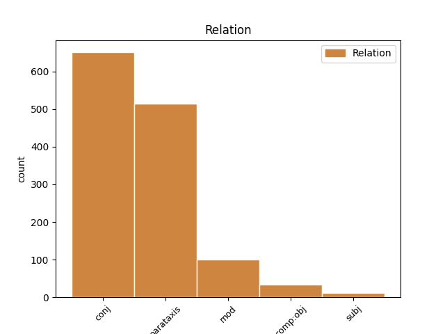
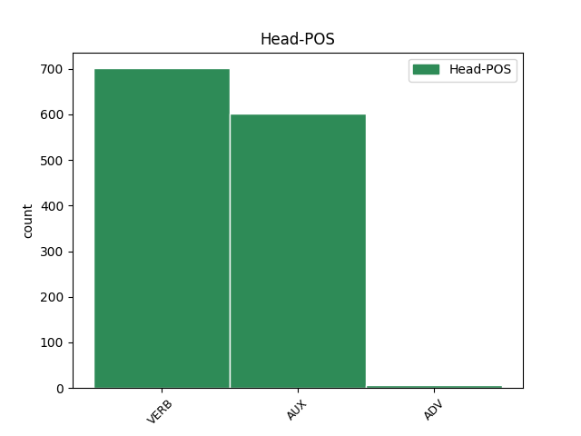
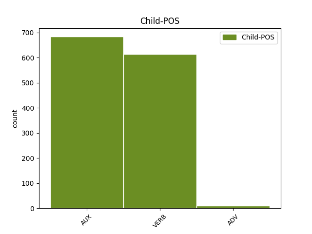

Distribution of features within this leaf



Agreement Rules sorted by frequency.
- When the dependent token is the conjunct(conj) of the head token,
1 Ako _ _ _ _ 0 _ _ _
2 je _ _ _ _ 0 _ _ _
3 moguće _ _ _ _ 0 _ _ _
4 da _ _ _ _ 0 _ _ _
5 neko _ _ _ _ 0 _ _ _
6 uhakuje _ _ _ _ 0 _ _ _
7 vaš _ _ _ _ 0 _ _ _
8 toster _ _ _ _ 0 _ _ _
9 i _ _ _ _ 0 _ _ _
10 preko _ _ _ _ 0 _ _ _
11 njega _ _ _ _ 0 _ _ _
12 dođe doći VERB Vmr3s Mood=Ind|Number=Sing|Person=3|Tense=Pres|VerbForm=Fin 0 _ _ _
13 do _ _ _ _ 0 _ _ _
14 intimnih _ _ _ _ 0 _ _ _
15 podataka _ _ _ _ 0 _ _ _
16 o _ _ _ _ 0 _ _ _
17 vama _ _ _ _ 0 _ _ _
18 ili _ _ _ _ 0 _ _ _
19 hakovanjem _ _ _ _ 0 _ _ _
20 autopilota _ _ _ _ 0 _ _ _
21 u _ _ _ _ 0 _ _ _
22 kolima _ _ _ _ 0 _ _ _
23 može moći VERB Vmr3s Mood=Ind|Number=Sing|Person=3|Tense=Pres|VerbForm=Fin 12 conj _ _
24 da _ _ _ _ 0 _ _ _
25 se _ _ _ _ 0 _ _ _
26 počini _ _ _ _ 0 _ _ _
27 ubistvo _ _ _ _ 0 _ _ _
28 , _ _ _ _ 0 _ _ _
29 koliku _ _ _ _ 0 _ _ _
30 opasnost _ _ _ _ 0 _ _ _
31 onda _ _ _ _ 0 _ _ _
32 nosi _ _ _ _ 0 _ _ _
33 hakovanje _ _ _ _ 0 _ _ _
34 infrastrukture _ _ _ _ 0 _ _ _
35 ili _ _ _ _ 0 _ _ _
36 bolnica _ _ _ _ 0 _ _ _
37 ili _ _ _ _ 0 _ _ _
38 nuklearnih _ _ _ _ 0 _ _ _
39 silosa _ _ _ _ 0 _ _ _
40 ? _ _ _ _ 0 _ _ _
1 Nasumice _ _ _ _ 0 _ _ _
2 sam biti AUX Var1s Mood=Ind|Number=Sing|Person=1|Tense=Pres|VerbForm=Fin 0 _ _ _
3 otvorio _ _ _ _ 0 _ _ _
4 njegov _ _ _ _ 0 _ _ _
5 roman _ _ _ _ 0 _ _ _
6 Saturnovi _ _ _ _ 0 _ _ _
7 prstenovi _ _ _ _ 0 _ _ _
8 i _ _ _ _ 0 _ _ _
9 naišao _ _ _ _ 0 _ _ _
10 na _ _ _ _ 0 _ _ _
11 rečenicu _ _ _ _ 0 _ _ _
12 : _ _ _ _ 0 _ _ _
13 „ _ _ _ _ 0 _ _ _
14 Mesecima _ _ _ _ 0 _ _ _
15 i _ _ _ _ 0 _ _ _
16 godinama _ _ _ _ 0 _ _ _
17 uspomene _ _ _ _ 0 _ _ _
18 spavaju spavati VERB Vmr3p Mood=Ind|Number=Plur|Person=3|Tense=Pres|VerbForm=Fin 2 parataxis _ _
19 u _ _ _ _ 0 _ _ _
20 nama _ _ _ _ 0 _ _ _
21 i _ _ _ _ 0 _ _ _
22 tiho _ _ _ _ 0 _ _ _
23 nastavljaju _ _ _ _ 0 _ _ _
24 da _ _ _ _ 0 _ _ _
25 bujaju _ _ _ _ 0 _ _ _
26 , _ _ _ _ 0 _ _ _
27 dok _ _ _ _ 0 _ _ _
28 ih _ _ _ _ 0 _ _ _
29 ne _ _ _ _ 0 _ _ _
30 prizove _ _ _ _ 0 _ _ _
31 nekakva _ _ _ _ 0 _ _ _
32 sitnica _ _ _ _ 0 _ _ _
33 , _ _ _ _ 0 _ _ _
34 nakon _ _ _ _ 0 _ _ _
35 čega _ _ _ _ 0 _ _ _
36 na _ _ _ _ 0 _ _ _
37 čudnovat _ _ _ _ 0 _ _ _
38 način _ _ _ _ 0 _ _ _
39 , _ _ _ _ 0 _ _ _
40 zaslepe _ _ _ _ 0 _ _ _
41 naše _ _ _ _ 0 _ _ _
42 bitisanje _ _ _ _ 0 _ _ _
43 . _ _ _ _ 0 _ _ _
44 ” _ _ _ _ 0 _ _ _
1 Međutim _ _ _ _ 0 _ _ _
2 , _ _ _ _ 0 _ _ _
3 kao _ _ _ _ 0 _ _ _
4 što _ _ _ _ 0 _ _ _
5 lagano _ _ _ _ 0 _ _ _
6 , _ _ _ _ 0 _ _ _
7 ali _ _ _ _ 0 _ _ _
8 sigurno _ _ _ _ 0 _ _ _
9 napreduje napredovati VERB Vmr3s Mood=Ind|Number=Sing|Person=3|Tense=Pres|VerbForm=Fin 0 _ _ _
10 širenje _ _ _ _ 0 _ _ _
11 nuklearnih _ _ _ _ 0 _ _ _
12 centrala _ _ _ _ 0 _ _ _
13 po _ _ _ _ 0 _ _ _
14 svetu _ _ _ _ 0 _ _ _
15 usred _ _ _ _ 0 _ _ _
16 ekonomske _ _ _ _ 0 _ _ _
17 isplativosti _ _ _ _ 0 _ _ _
18 dogod _ _ _ _ 0 _ _ _
19 nema nemati VERB Vmr3s Mood=Ind|Number=Sing|Person=3|Tense=Pres|VerbForm=Fin 9 mod _ _
20 akcidenata _ _ _ _ 0 _ _ _
21 , _ _ _ _ 0 _ _ _
22 tako _ _ _ _ 0 _ _ _
23 će _ _ _ _ 0 _ _ _
24 barem _ _ _ _ 0 _ _ _
25 zasad _ _ _ _ 0 _ _ _
26 i _ _ _ _ 0 _ _ _
27 Internet _ _ _ _ 0 _ _ _
28 stvari _ _ _ _ 0 _ _ _
29 nastaviti _ _ _ _ 0 _ _ _
30 da _ _ _ _ 0 _ _ _
31 postaje _ _ _ _ 0 _ _ _
32 realnost _ _ _ _ 0 _ _ _
33 , _ _ _ _ 0 _ _ _
34 dobrim _ _ _ _ 0 _ _ _
35 delom _ _ _ _ 0 _ _ _
36 i _ _ _ _ 0 _ _ _
37 zato _ _ _ _ 0 _ _ _
38 što _ _ _ _ 0 _ _ _
39 su _ _ _ _ 0 _ _ _
40 mlađe _ _ _ _ 0 _ _ _
41 generacije _ _ _ _ 0 _ _ _
42 već _ _ _ _ 0 _ _ _
43 od _ _ _ _ 0 _ _ _
44 malena _ _ _ _ 0 _ _ _
45 okružene _ _ _ _ 0 _ _ _
46 takvim _ _ _ _ 0 _ _ _
47 tehnološkim _ _ _ _ 0 _ _ _
48 konceptom _ _ _ _ 0 _ _ _
49 , _ _ _ _ 0 _ _ _
50 pa _ _ _ _ 0 _ _ _
51 i _ _ _ _ 0 _ _ _
52 delimično _ _ _ _ 0 _ _ _
53 integrisane _ _ _ _ 0 _ _ _
54 u _ _ _ _ 0 _ _ _
55 njega _ _ _ _ 0 _ _ _
56 . _ _ _ _ 0 _ _ _
1 Jedan _ _ _ _ 0 _ _ _
2 od _ _ _ _ 0 _ _ _
3 pionirskih _ _ _ _ 0 _ _ _
4 koraka _ _ _ _ 0 _ _ _
5 na _ _ _ _ 0 _ _ _
6 putu _ _ _ _ 0 _ _ _
7 ka _ _ _ _ 0 _ _ _
8 Internetu _ _ _ _ 0 _ _ _
9 stvari _ _ _ _ 0 _ _ _
10 napravljen _ _ _ _ 0 _ _ _
11 je _ _ _ _ 0 _ _ _
12 još _ _ _ _ 0 _ _ _
13 davne _ _ _ _ 0 _ _ _
14 1982. _ _ _ _ 0 _ _ _
15 kada _ _ _ _ 0 _ _ _
16 je _ _ _ _ 0 _ _ _
17 na _ _ _ _ 0 _ _ _
18 Karnegi _ _ _ _ 0 _ _ _
19 univerzitetu _ _ _ _ 0 _ _ _
20 u _ _ _ _ 0 _ _ _
21 Pensilvaniji _ _ _ _ 0 _ _ _
22 uspešno _ _ _ _ 0 _ _ _
23 umrežen _ _ _ _ 0 _ _ _
24 automat _ _ _ _ 0 _ _ _
25 za _ _ _ _ 0 _ _ _
26 koka-kolu _ _ _ _ 0 _ _ _
27 sa _ _ _ _ 0 _ _ _
28 kompjuterima _ _ _ _ 0 _ _ _
29 univerziteta _ _ _ _ 0 _ _ _
30 tako _ _ _ _ 0 _ _ _
31 da _ _ _ _ 0 _ _ _
32 je _ _ _ _ 0 _ _ _
33 svaki _ _ _ _ 0 _ _ _
34 zaposleni _ _ _ _ 0 _ _ _
35 mogao _ _ _ _ 0 _ _ _
36 da _ _ _ _ 0 _ _ _
37 vidi videti VERB Vmr3s Mood=Ind|Number=Sing|Person=3|Tense=Pres|VerbForm=Fin 0 _ _ _
38 preko _ _ _ _ 0 _ _ _
39 računara _ _ _ _ 0 _ _ _
40 koje _ _ _ _ 0 _ _ _
41 dugme _ _ _ _ 0 _ _ _
42 na _ _ _ _ 0 _ _ _
43 automatu _ _ _ _ 0 _ _ _
44 treba trebati VERB Vmr3s Mood=Ind|Number=Sing|Person=3|Tense=Pres|VerbForm=Fin 37 comp:obj _ _
45 pritisnuti _ _ _ _ 0 _ _ _
46 da _ _ _ _ 0 _ _ _
47 bi _ _ _ _ 0 _ _ _
48 se _ _ _ _ 0 _ _ _
49 dobila _ _ _ _ 0 _ _ _
50 najrashlađenija _ _ _ _ 0 _ _ _
51 boca _ _ _ _ 0 _ _ _
52 u _ _ _ _ 0 _ _ _
53 mašini _ _ _ _ 0 _ _ _
54 . _ _ _ _ 0 _ _ _
1 Nije biti AUX Var3s Mood=Ind|Number=Sing|Person=3|Tense=Pres|VerbForm=Fin 0 _ _ _
2 sasvim _ _ _ _ 0 _ _ _
3 jasno _ _ _ _ 0 _ _ _
4 koliko _ _ _ _ 0 _ _ _
5 se _ _ _ _ 0 _ _ _
6 dugo _ _ _ _ 0 _ _ _
7 mogu moći VERB Vmr3p Mood=Ind|Number=Plur|Person=3|Tense=Pres|VerbForm=Fin 1 subj _ _
8 osećati _ _ _ _ 0 _ _ _
9 posledice _ _ _ _ 0 _ _ _
10 deprivacije _ _ _ _ 0 _ _ _
11 sna _ _ _ _ 0 _ _ _
12 . _ _ _ _ 0 _ _ _
Disagree Examples:
1 Krivična _ _ _ _ 0 _ _ _
2 presuda _ _ _ _ 0 _ _ _
3 i _ _ _ _ 0 _ _ _
4 zatvorska _ _ _ _ 0 _ _ _
5 kazna _ _ _ _ 0 _ _ _
6 medijskom _ _ _ _ 0 _ _ _
7 mogulu _ _ _ _ 0 _ _ _
8 Veliji _ _ _ _ 0 _ _ _
9 Ramkovskom _ _ _ _ 0 _ _ _
10 , _ _ _ _ 0 _ _ _
11 koji _ _ _ _ 0 _ _ _
12 je _ _ _ _ 0 _ _ _
13 često _ _ _ _ 0 _ _ _
14 kritikovao _ _ _ _ 0 _ _ _
15 makedonsku _ _ _ _ 0 _ _ _
16 vladu _ _ _ _ 0 _ _ _
17 , _ _ _ _ 0 _ _ _
18 mogla _ _ _ _ 0 _ _ _
19 bi biti AUX Vaa3s Mood=Cnd|Number=Sing|Person=3|Tense=Past|VerbForm=Fin 0 _ _ _
20 da _ _ _ _ 0 _ _ _
21 zaplaši _ _ _ _ 0 _ _ _
22 medije _ _ _ _ 0 _ _ _
23 , _ _ _ _ 0 _ _ _
24 kažu kazati VERB Vmr3p Mood=Ind|Number=Plur|Person=3|Tense=Pres|VerbForm=Fin 19 parataxis _ _
25 novinari _ _ _ _ 0 _ _ _
26 u _ _ _ _ 0 _ _ _
27 toj _ _ _ _ 0 _ _ _
28 maloj _ _ _ _ 0 _ _ _
29 balkanskoj _ _ _ _ 0 _ _ _
30 državi _ _ _ _ 0 _ _ _
31 . _ _ _ _ 0 _ _ _
1 " _ _ _ _ 0 _ _ _
2 Utisak _ _ _ _ 0 _ _ _
3 je _ _ _ _ 0 _ _ _
4 da _ _ _ _ 0 _ _ _
5 su _ _ _ _ 0 _ _ _
6 koraci _ _ _ _ 0 _ _ _
7 preduzeti _ _ _ _ 0 _ _ _
8 prema _ _ _ _ 0 _ _ _
9 medijima _ _ _ _ 0 _ _ _
10 , _ _ _ _ 0 _ _ _
11 za _ _ _ _ 0 _ _ _
12 koje _ _ _ _ 0 _ _ _
13 su _ _ _ _ 0 _ _ _
14 izrečene _ _ _ _ 0 _ _ _
15 presude _ _ _ _ 0 _ _ _
16 , _ _ _ _ 0 _ _ _
17 selektivni _ _ _ _ 0 _ _ _
18 , _ _ _ _ 0 _ _ _
19 te _ _ _ _ 0 _ _ _
20 da _ _ _ _ 0 _ _ _
21 institucije _ _ _ _ 0 _ _ _
22 ne _ _ _ _ 0 _ _ _
23 koriste koristiti VERB Vmr3p Mood=Ind|Number=Plur|Person=3|Tense=Pres|VerbForm=Fin 0 _ _ _
24 iste _ _ _ _ 0 _ _ _
25 metode _ _ _ _ 0 _ _ _
26 u _ _ _ _ 0 _ _ _
27 sprovođenju _ _ _ _ 0 _ _ _
28 zakona _ _ _ _ 0 _ _ _
29 prema _ _ _ _ 0 _ _ _
30 svim _ _ _ _ 0 _ _ _
31 medijima _ _ _ _ 0 _ _ _
32 " _ _ _ _ 0 _ _ _
33 , _ _ _ _ 0 _ _ _
34 rekla reći VERB Vmp-sf Gender=Fem|Number=Sing|Tense=Past|VerbForm=Part|Voice=Act 23 parataxis _ _
35 direktorka _ _ _ _ 0 _ _ _
36 Medijskog _ _ _ _ 0 _ _ _
37 instituta _ _ _ _ 0 _ _ _
38 Makedonije _ _ _ _ 0 _ _ _
39 Biljana _ _ _ _ 0 _ _ _
40 Petkovska _ _ _ _ 0 _ _ _
41 za _ _ _ _ 0 _ _ _
42 SETimes _ _ _ _ 0 _ _ _
43 . _ _ _ _ 0 _ _ _
1 Njegov _ _ _ _ 0 _ _ _
2 cilj _ _ _ _ 0 _ _ _
3 , _ _ _ _ 0 _ _ _
4 a _ _ _ _ 0 _ _ _
5 danas _ _ _ _ 0 _ _ _
6 se _ _ _ _ 0 _ _ _
7 to _ _ _ _ 0 _ _ _
8 i _ _ _ _ 0 _ _ _
9 pokazalo pokazati VERB Vmp-sn Gender=Neut|Number=Sing|Tense=Past|VerbForm=Part|Voice=Act 12 parataxis _ SpaceAfter=No
10 , _ _ _ _ 0 _ _ _
11 bio _ _ _ _ 0 _ _ _
12 je biti AUX Var3s Mood=Ind|Number=Sing|Person=3|Tense=Pres|VerbForm=Fin 0 _ _ _
13 da _ _ _ _ 0 _ _ _
14 ućutka _ _ _ _ 0 _ _ _
15 A1 _ _ _ _ 0 _ _ _
16 TV _ _ _ _ 0 _ _ _
17 i _ _ _ _ 0 _ _ _
18 Veliju _ _ _ _ 0 _ _ _
19 Ramkovskog _ _ _ _ 0 _ _ _
20 , _ _ _ _ 0 _ _ _
21 kao _ _ _ _ 0 _ _ _
22 nosioce _ _ _ _ 0 _ _ _
23 borbe _ _ _ _ 0 _ _ _
24 protiv _ _ _ _ 0 _ _ _
25 diktature _ _ _ _ 0 _ _ _
26 [ _ _ _ _ 0 _ _ _
27 premijera _ _ _ _ 0 _ _ _
28 ] _ _ _ _ 0 _ _ _
29 Nikole _ _ _ _ 0 _ _ _
30 Gruevskog _ _ _ _ 0 _ _ _
31 " _ _ _ _ 0 _ _ _
32 , _ _ _ _ 0 _ _ _
33 kaže _ _ _ _ 0 _ _ _
34 bivši _ _ _ _ 0 _ _ _
35 urednik _ _ _ _ 0 _ _ _
36 A1 _ _ _ _ 0 _ _ _
37 TV _ _ _ _ 0 _ _ _
38 i _ _ _ _ 0 _ _ _
39 poslanik _ _ _ _ 0 _ _ _
40 opozicione _ _ _ _ 0 _ _ _
41 Sandžačke _ _ _ _ 0 _ _ _
42 lige _ _ _ _ 0 _ _ _
43 Safet _ _ _ _ 0 _ _ _
44 Biševac _ _ _ _ 0 _ _ _
45 . _ _ _ _ 0 _ _ _
1 Član _ _ _ _ 0 _ _ _
2 Predsedništva _ _ _ _ 0 _ _ _
3 BiH _ _ _ _ 0 _ _ _
4 Željko _ _ _ _ 0 _ _ _
5 Komšić _ _ _ _ 0 _ _ _
6 okrenuo _ _ _ _ 0 _ _ _
7 je biti AUX Var3s Mood=Ind|Number=Sing|Person=3|Tense=Pres|VerbForm=Fin 0 _ _ _
8 leđa _ _ _ _ 0 _ _ _
9 vladajućoj _ _ _ _ 0 _ _ _
10 Socijaldemokratskoj _ _ _ _ 0 _ _ _
11 partiji _ _ _ _ 0 _ _ _
12 , _ _ _ _ 0 _ _ _
13 uzdrmavši uzdrmati ADV Rr Tense=Past|VerbForm=Conv 7 mod _ _
14 političku _ _ _ _ 0 _ _ _
15 scenu _ _ _ _ 0 _ _ _
16 u _ _ _ _ 0 _ _ _
17 zemlji _ _ _ _ 0 _ _ _
18 . _ _ _ _ 0 _ _ _
1 " _ _ _ _ 0 _ _ _
2 Lagumdžija _ _ _ _ 0 _ _ _
3 i _ _ _ _ 0 _ _ _
4 Komšić _ _ _ _ 0 _ _ _
5 su _ _ _ _ 0 _ _ _
6 upropastili _ _ _ _ 0 _ _ _
7 SDP _ _ _ _ 0 _ _ _
8 pretvorivši pretvoriti ADV Rr Tense=Past|VerbForm=Conv 9 mod _ _
9 je biti AUX Var3s Mood=Ind|Number=Sing|Person=3|Tense=Pres|VerbForm=Fin 0 _ _ _
10 u _ _ _ _ 0 _ _ _
11 taoca _ _ _ _ 0 _ _ _
12 ličnih _ _ _ _ 0 _ _ _
13 političkih _ _ _ _ 0 _ _ _
14 želja _ _ _ _ 0 _ _ _
15 . _ _ _ _ 0 _ _ _